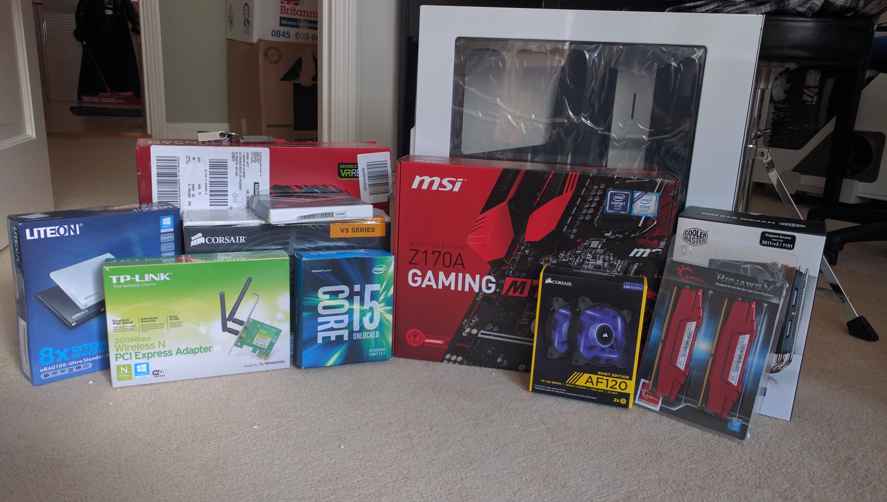
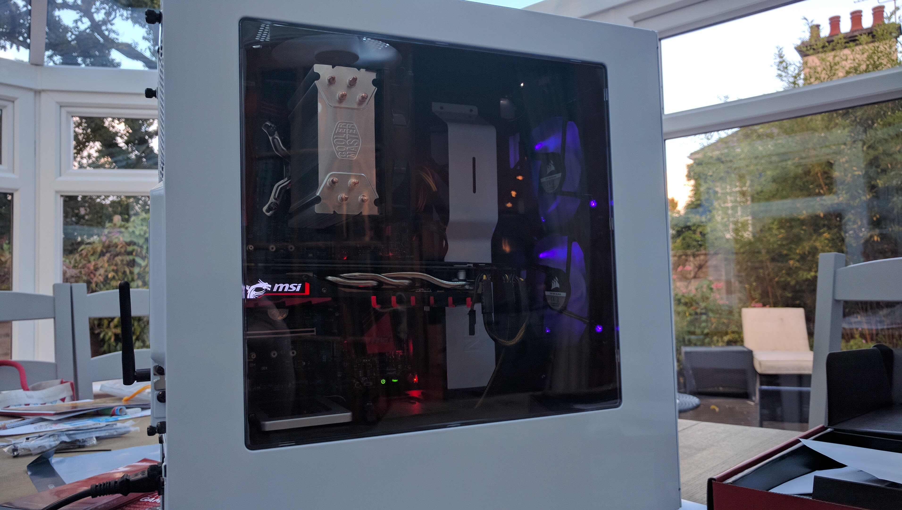
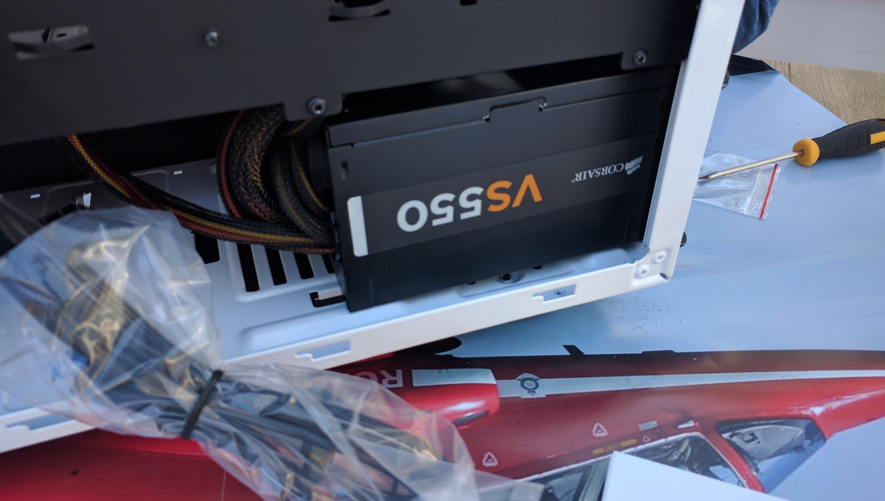
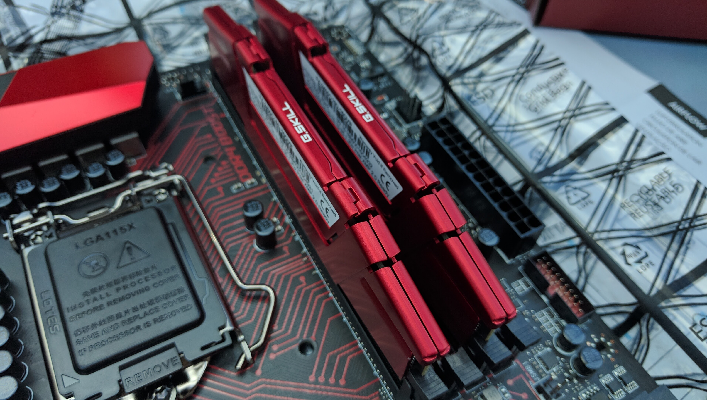
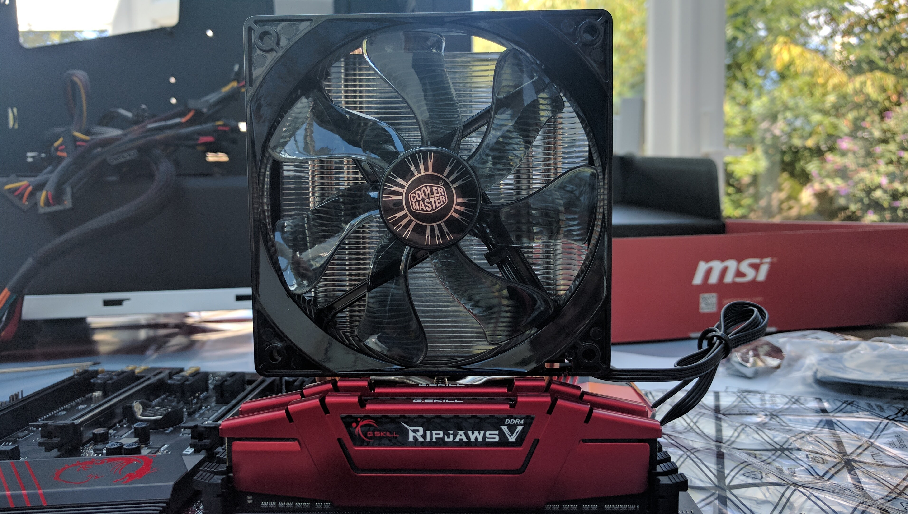
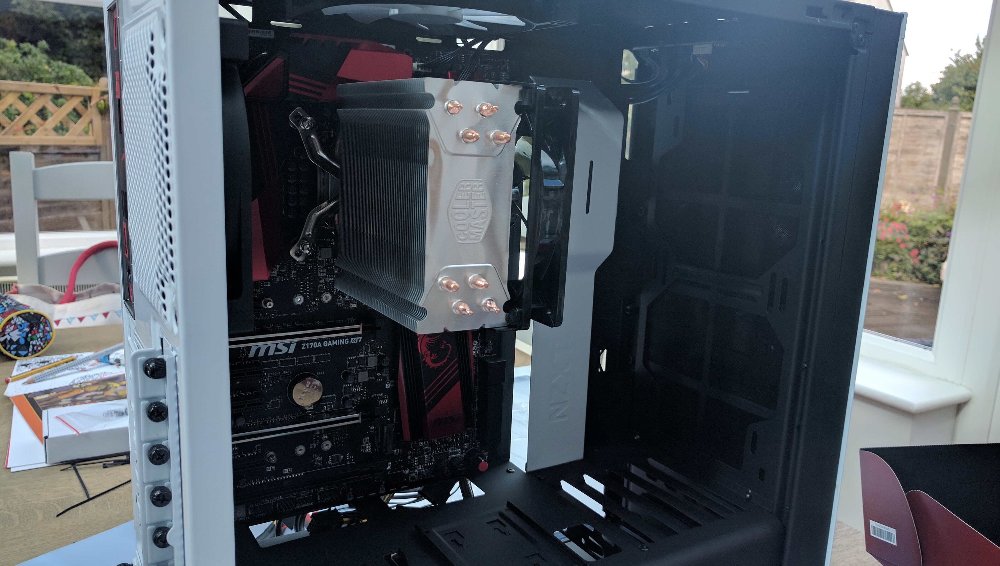
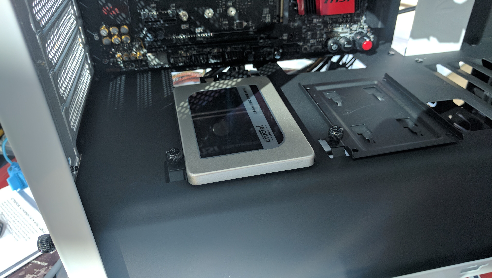
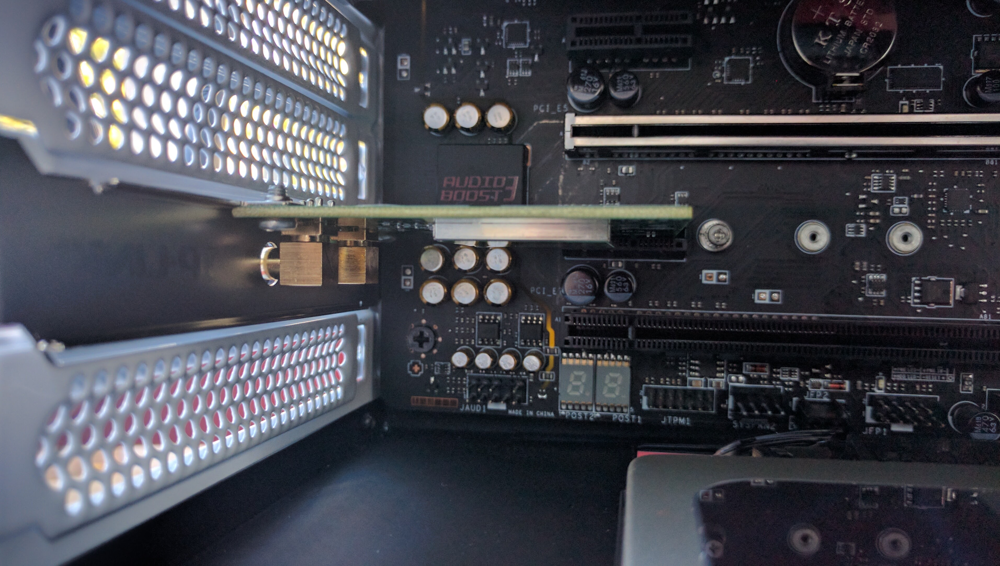
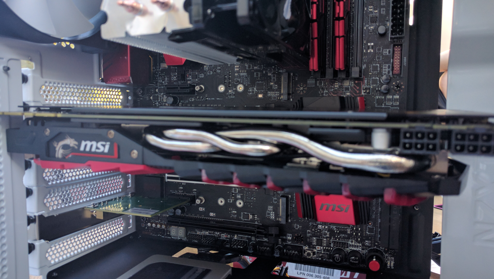

Computer Building 2
I will walk you though my latest PC build with photos.
A year and a bit on, my computer needed an upgrade. I was still planning to use my old one but not as much. I will walk you through the building process, step by step.
To this
this time round I went with an Intel 6th gen Skylake processor as AMD processors weren’t that good last time. Because of this change of processor I would need to have a motherboard with a different type of socket, not AM3+ but Z170 as this is what intel processors need.
I built this one in another NZXT case, but a different model - the mid-tower S-340, which is smaller than the last but is honestly the best case I have ever built in, there is so much room, a special area for the PSU and loads of holes for cable management.
The specifications are the following -
CPU - Intel i5-6600k
Graphics Card - MSI Nvidia Geforce GTX 1070
Motherboard - MSI M5 Z170 LGA1151
RAM - GSkill RipJaws DDR4 2x8GB Sticks (16GB)
CPU Cooler - Hyper 212 Evo
SSD - 750GB SSD
PSU - Corsair 750W
Case - NZXT S-340 White
The power supply is in.
The RAM sticks are installed into the motherboard.
The CPU has been carefully placed into its socket, making sure not to bend any pins!

After lots of fiddling, the CPU Cooler has finally been installed.
I then install the motherboard into the case using the standoff pins. This was quite tricky.
I have installed the SSD onto the conviniently located trays that are fitted into this amazing case.
I then install the Wi-Fi card. It can be put right under the GPU.
I then install the expensive bit, the GPU. To do this I have to remove one of the backplates and screw the GPU onto it. It is literally held by ONE screw!
Altogether, the build took about 6 hours. I thouroughly enjoyed it. It was my fourth time building a PC and I feel much more confident building one now!
I use this computer for video editing, gaming and game development.